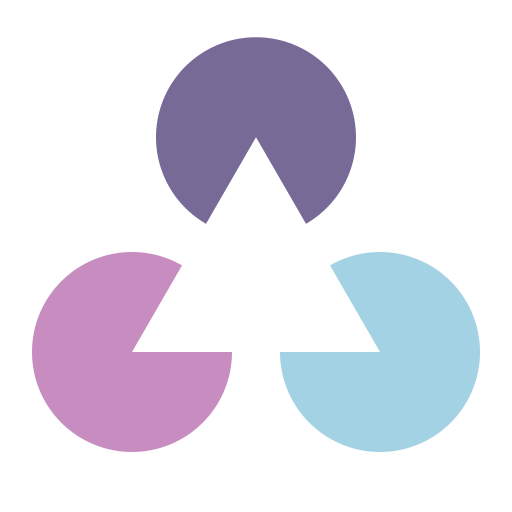
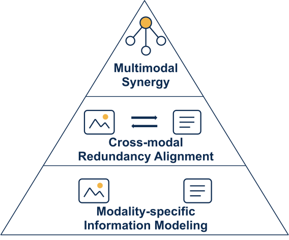
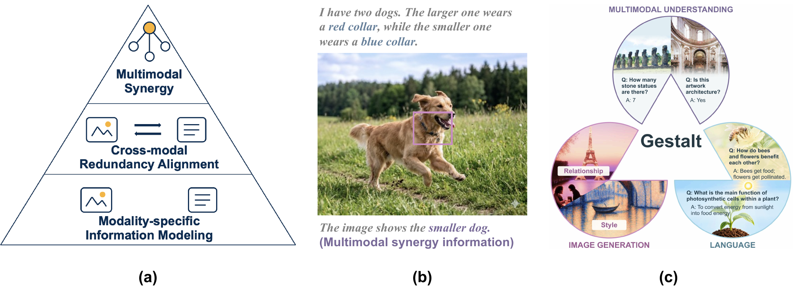
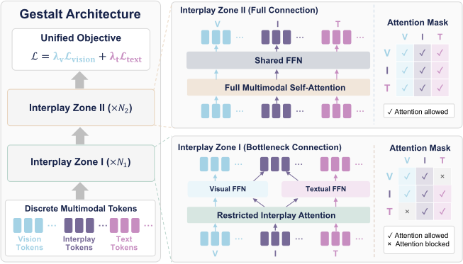
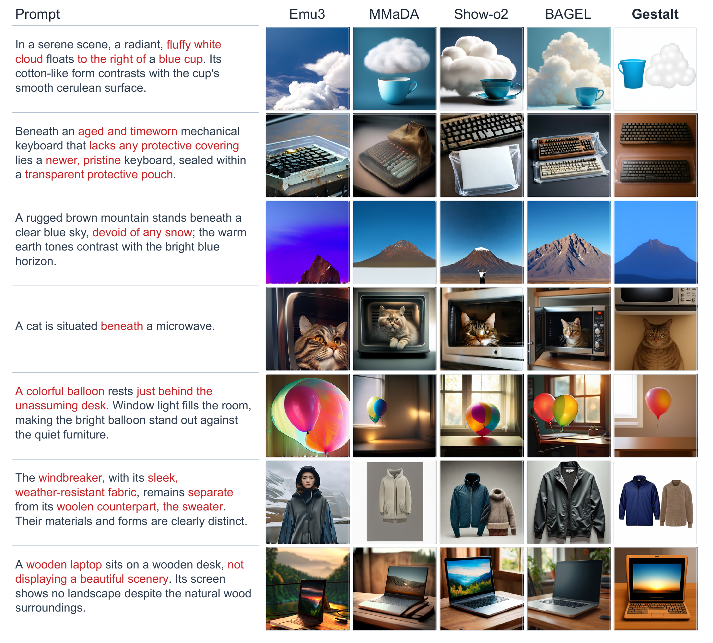
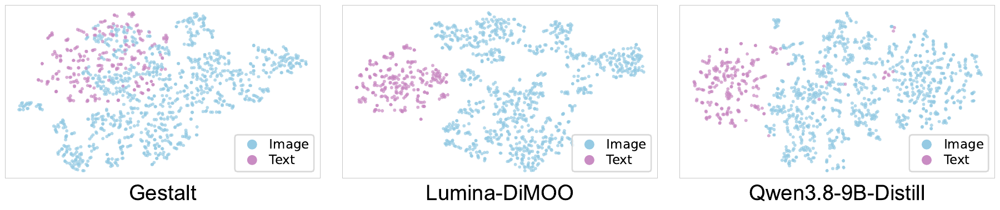
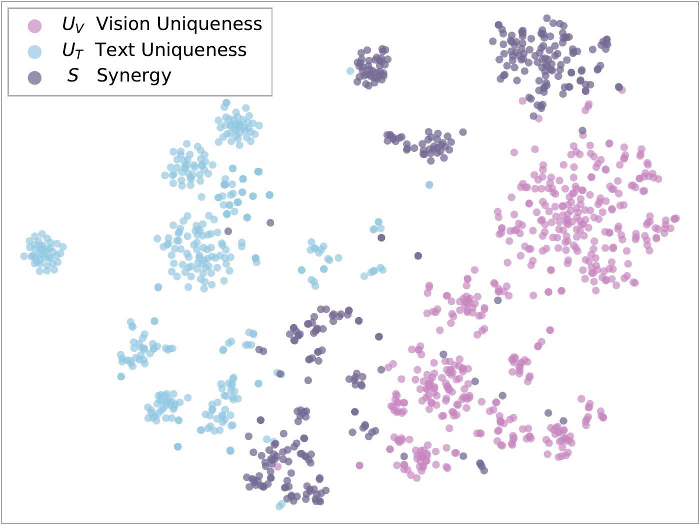

Multimodal Synergy
Combine complementary cues to derive information that neither modality provides alone.


OVERVIEW
Multimodal intelligence grows from preserving what each modality knows to discovering what they can reveal together.

Combine complementary cues to derive information that neither modality provides alone.
Align shared information across modalities to establish cross-modal correspondence.
Preserve information available only in one modality, providing the foundation for multimodal learning.

“I have two dogs. The larger one wears a red collar, while the smaller one wears a blue collar.”
The image provides the collar color; the text links collar color to size. Together, they identify the smaller dog.
ARCHITECTURE
Gestalt brings vision and language into a shared discrete diffusion framework. Learnable interplay tokens connect two zones: one preserves modality-specific information, and the other enables deeper integration.

DATA & TRAINING
70M
Joint Masked Prediction
8M
Conditional Masked Prediction
13.7M
Four Interplay Categories
Plus ≈2.5M text-to-image examples across all SFT phases.
Supervised Fine-Tuning

All four categories remain present; their sampling ratios change across phases.
IMAGE GENERATION

Gestalt achieves the strongest overall result among the evaluated models, combining fine-grained semantic alignment with compositional generation.
| Model | Overall | Style | World | Attr. | Action | Rel. | Comp. | Grammar | Layout | Logic | Text |
|---|---|---|---|---|---|---|---|---|---|---|---|
| Gen. Only | |||||||||||
| DALL-E-3 | 70.82 | 95.08 | 92.71 | 84.98 | 68.36 | 77.90 | 73.88 | 68.19 | 71.76 | 57.11 | 18.26 |
| SD-3.5-Large | 64.35 | 88.12 | 88.15 | 78.78 | 59.63 | 67.62 | 62.21 | 65.23 | 71.19 | 44.90 | 17.66 |
| OmniGen2 | 71.39 | 94.35 | 84.83 | 83.03 | 66.57 | 73.06 | 70.49 | 76.40 | 80.63 | 56.55 | 27.99 |
| Unified | |||||||||||
| Emu3 | 50.95 | 89.36 | 76.16 | 66.81 | 43.80 | 51.70 | 46.00 | 50.25 | 56.67 | 27.43 | 1.36 |
| Show-o2 | 70.33 | 93.11 | 88.44 | 86.35 | 69.02 | 77.37 | 76.45 | 70.30 | 80.63 | 59.71 | 1.90 |
| Janus-Pro | 71.11 | 94.02 | 88.15 | 81.81 | 69.14 | 77.96 | 76.53 | 74.62 | 82.14 | 62.62 | 4.08 |
| MMaDA | 40.10 | 75.83 | 52.75 | 49.90 | 32.42 | 39.06 | 38.37 | 50.00 | 43.02 | 19.42 | 0.27 |
| BAGEL | 71.26 | 92.44 | 89.31 | 84.21 | 67.62 | 75.70 | 74.71 | 74.75 | 81.90 | 59.71 | 12.23 |
| Lumina-DiMOO | 71.81 | 86.88 | 88.58 | 83.71 | 69.66 | 73.33 | 74.93 | 74.49 | 84.84 | 58.01 | 23.64 |
| Gestalt | 73.30↑1.49 | 95.85↑0.77 | 81.65 | 82.51 | 68.57 | 78.12↑0.16 | 81.20↑4.67 | 82.23↑5.83 | 85.79↑0.95 | 73.28↑10.66 | 3.80 |
Gestalt leads across short and long instructions, with a larger advantage when longer prompts introduce more interdependent requirements.
| Model | Overall | Basic | Advanced | Designer | ||||
|---|---|---|---|---|---|---|---|---|
| Short | Long | Short | Long | Short | Long | Short | Long | |
| Gen. Only | ||||||||
| PixArt-Sigma | 62.00 | 58.12 | 70.66 | 75.25 | 57.65 | 49.50 | 62.11 | 52.41 |
| FLUX.1 Pro | 67.32 | 69.89 | 79.08 | 78.91 | 61.10 | 65.37 | 71.80 | 68.80 |
| MidJourney V7 | 68.74 | 65.69 | 77.41 | 76.00 | 64.66 | 60.53 | 68.83 | 63.61 |
| SD 3.5 Large | 71.15 | 66.96 | 78.34 | 79.56 | 67.67 | 61.18 | 64.43 | 66.39 |
| Unified | ||||||||
| Emu3 | 43.38 | 39.44 | 49.88 | 42.08 | 37.09 | 33.52 | 53.73 | 60.45 |
| MMaDA | 52.32 | 52.90 | 65.78 | 66.71 | 50.32 | 50.76 | 60.45 | 55.60 |
| Show-o2 | 67.38 | 68.76 | 81.16 | 84.06 | 69.25 | 72.99 | 75.37 | 75.75 |
| Janus-Pro | 66.50 | 65.02 | 79.33 | 78.25 | 59.71 | 58.82 | 65.84 | 60.25 |
| BAGEL | 71.50 | 71.70 | 81.79 | 80.05 | 70.24 | 72.19 | 68.28 | 67.91 |
| Lumina-DiMOO | 71.27 | 68.53 | 75.50 | 78.29 | 70.49 | 68.33 | 69.78 | 70.90 |
| Gestalt | 74.57↑3.07 | 78.86↑7.16 | 83.79↑2.00 | 86.06↑2.00 | 72.60↑2.11 | 77.69↑4.70 | 84.70↑9.33 | 88.81↑13.06 |
MULTIMODAL UNDERSTANDING
The gains on vision-centric tasks reflect the value of preserving modality-specific information within a unified model.
| Models | General | Vision-Centric | ||||||
|---|---|---|---|---|---|---|---|---|
| MME-P | GQA | MMStar-P | POPE | RWQA | MMVP | CVB2d | CVB3d | |
| AR-Based | ||||||||
| BAGEL | 1687.0† | 66.4 | 70.9 | 88.2 | 67.6 | 69.3† | 77.7 | 84.2 |
| Diffusion-based | ||||||||
| MMaDA | 1410.7† | 61.3† | 43.0 | 86.1† | 48.2 | 17.3 | 55.3 | 54.8 |
| Lumina-DiMOO | 1534.2† | 43.3 | - | 87.4† | 35.9 | 34.0 | 54.3 | 52.0 |
| LaViDA-o | 1431.0 | 54.1 | 55.9 | -- | 56.6 | 47.3 | 73.4 | 70.8 |
| LLaDA-o | 1412.0† | 58.0 | 55.6 | 87.2 | 66.4 | 46.7 | 78.0 | 75.9 |
| Omni-diffusion | 1216.7† | -- | -- | 76.6† | -- | -- | -- | -- |
| Gestalt | 1600.2↑66.0 | 60.2 | 60.8 | 86.5 | 59.1 | 48.7↑1.4 | 78.9↑0.9 | 86.1↑10.2 |
LANGUAGE
Gestalt leads the evaluated diffusion-based unified models and achieves language performance comparable to autoregressive models such as Janus-Pro.
| Model | MMLU | TruthfulQA | WinoGrande | HellaSwag | ARC-E | ARC-C |
|---|---|---|---|---|---|---|
| AR-Based | ||||||
| Show-o2 | 71.70 | 46.94 | 74.03 | 76.67 | 84.43 | 58.53 |
| Janus-Pro | 49.90 | 41.72 | 67.17 | 68.41 | 65.74 | 40.70 |
| BAGEL | 28.02 | 40.51 | 50.75 | 28.59 | 27.53 | 23.63 |
| Diffusion-based | ||||||
| MMaDA | 40.14 | 43.81 | 54.85 | 45.81 | 46.72 | 28.67 |
| Lumina-DiMOO | 29.75 | 43.34 | 51.62 | 39.11 | 44.44 | 26.45 |
| LLaDA-o | 25.25 | 52.30 | 51.22 | 30.72 | 36.66 | 24.66 |
| Gestalt | 49.50↑9.36 | 47.55 | 60.62↑5.77 | 53.44↑7.63 | 62.29↑15.57 | 43.69↑15.02 |
MULTIMODAL INTERPLAY
Visual and textual tokens are more interleaved in Gestalt, suggesting a more integrated representation space than the evaluated diffusion-based and autoregressive baselines.

Strong visual-specific performance is paired with leading synergy results among the evaluated diffusion-based models.
| Model | Visual | Synergy | ||
|---|---|---|---|---|
| MIB-V | CoreCog-SM | MM-IMDb | SRBench | |
| AR-Based | ||||
| BAGEL | 65.96 | 65.00 | 60.60 | 51.89 |
| Diffusion-based | ||||
| MMaDA | 44.23 | 43.20 | 30.39 | 36.72 |
| Lumina-DiMOO | 56.43 | 42.20 | 31.22 | 45.50 |
| LLaDA-o | 60.31 | 53.30 | 39.64 | 50.89 |
| LaViDa-O | 58.07 | 50.60 | 51.54 | 40.89 |
| Gestalt | 59.89 | 55.20↑1.90 | 67.07↑15.53 | 53.17↑2.28 |
Interplay tokens form distinct visual-unique, text-unique, and synergistic structures. The synergy distribution partially bridges the other two, suggesting that these tokens adapt to different information demands.
